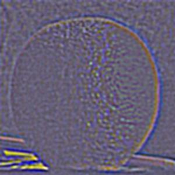
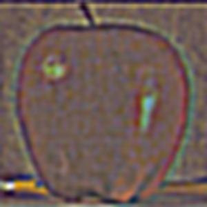
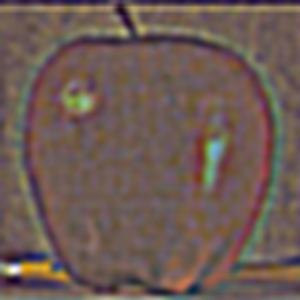

Project Overview
TODO
Finite Difference operator
The idea here is to use the finite difference as our filter to extract
edges in the x and y directions respectively. I convolved the image
twice, once with each partial derivative, x and y. Then I created the
gradient magnitude image with the following formula.
\( G = \sqrt{(D_x)^2 + (D_y)^2} \)
Folowing that I tested out a few thresholds to highlight the edges in
the image and settled on a threshold of 0.075.
\delta x
\delta y

Gradient
Binarized
Derivative of Gaussian (DoG) Filter
The results with Finite Difference were bit noisy. I used a Guassian filter to get smoother results. For this I take the outer product of a guassian vector to give me a matrix and then convolve this with the original image to create a blurred image. From there I repeated the above process of convolving this with each partial derivative and finding an appropriate threshold.
∂x
∂y

Gradient

Binarized
Image sharpening
You can sharpen a blurry image by running a filter to retain only the low frequencies of your image. Then if you subtract these low frequencies form the original image you will be left with only the high frequencies. If you then add the high frequencies back to the original image, therefore emphasizing them you get a "sharpened" image.
Original Image
Blurred Image
Sharpened Image
Hybrid Images
Furthering on the idea of frequnecies we can create hybrid images. Frequencies in the context of images refer to the rate fo change of pixels. For example, where edges appear in pictures are areas of high frequncy; whereas, areas of smooth transition in color or darkenss would be low frequency. The eye picks up on high frequnecies when it is up close to an image and picks up on lower frequencies further away. Using this, I've extracted the high and low frequnecy portions of images and aligned them on top of each other giving the result fo "hybrid" images.

High Frequency Image (prof. Efros)

Low Frequnecy Image
Alexei Lisa? Mona Efros?
Frequency Analysis of Mona Lisa
Frequency Analysis of prof. Efros

Frequency Analysis of filtered Mona Lisa
Frequency Analysis of filtered prof. Efros
Frequency Analysis of Hybrid
Einstein and Spaniel
Derek and Nutmeg
Laplacian and Gaussian Stacks
The next part of this project involves showing various frequnecies of images using Gaussian and Laplacian stacks. To make a Gaussian stack, I repeatedly used a gaussian filter on the image with an increasing sigma value for 5 levels. To create a laplacians stack you instead take the difference of the result of the current gaussian filter and the previous gaussian filter on the image.
Gaussian Stack of Apple
Gaussian Stack of Orange


Laplacian Stack of Apple
 


Laplacian Stack of Orange